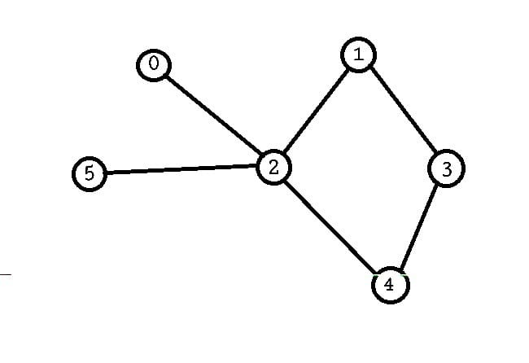

SDG: 11
Target: 11.3, 11.6
Indicator: 11.3.2, 11.6.1
Digital payment systems are vital for small businesses, ensuring they grow and access secure financial services for smoother economic operations.
1. Hashing: Ensures quick and secure transaction processing, helping verify payments efficiently using hashed functions.
Efficiency: Best case for searching, inserting, and deleting in O(1) time, and in the worst case O(n).
2. Heap Sort: Efficiently maintains the correct order for transaction records, particularly when dealing with large amounts of incoming payment data. Heap Sort helps with prioritizing urgent transactions that need immediate processing.
Efficiency: O(n log n) in time complexity.
3. Warshall’s Algorithm: Used to check if a path exists from any vertex (representing a customer or a transaction point) to another vertex in a graph. In the context of digital payment systems, this algorithm could help determine if two financial institutions, nodes, or transaction pathways are connected, ensuring that transactions can flow seamlessly and reliably between customers, businesses, and banks.
Efficiency: The time complexity of Warshall’s Algorithm is O(V^3), where V is the number of vertices in the graph, which works well for small to medium-sized financial networks.
4. Doubly Linked List (DLL): Used for efficiently storing and managing all transaction details in a digital payment system.
Efficiency: O(1) for adding or deleting transactions at both ends of the list.
Click to view related text files:
